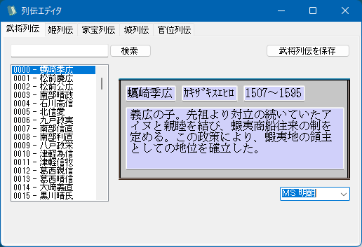
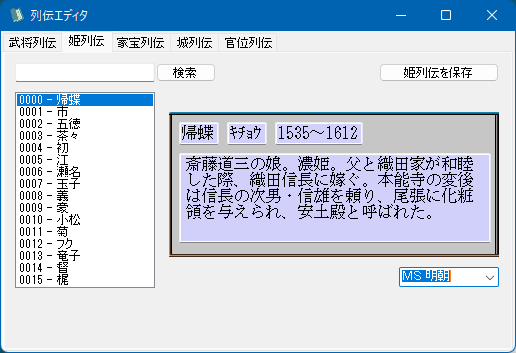
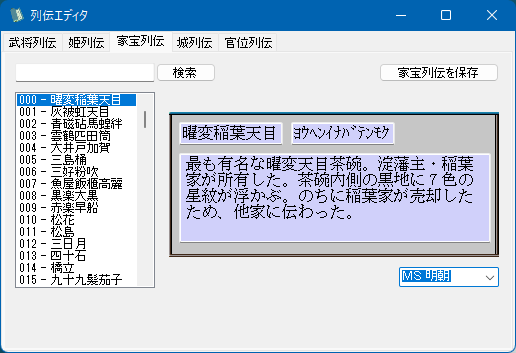
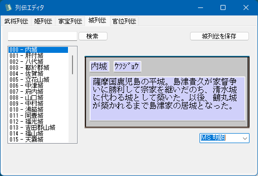
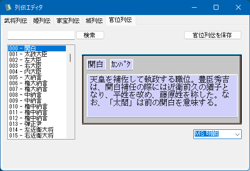

動作環境

-OK-6479ff.svg)

- .NET FrameWork 4.5 ～ 4.8
- Visual Studio 2017 Runtime をインストールしたことがない人は、インストールしてください。
OSのビット数に関わらずx86版をインストールしてください。
列伝を編集するためのツールとなります。
以下の５つの項目を編集することが出来ます。





上記、.zipファイルを解凍し、RetsudenEditor.exe を 「将星録フォルダ」に入れる。
RetsudenEditor.exe を実行。
使い方の説明を要するするほどのUI要素はありません。
WYSIWYGに近くなっています。